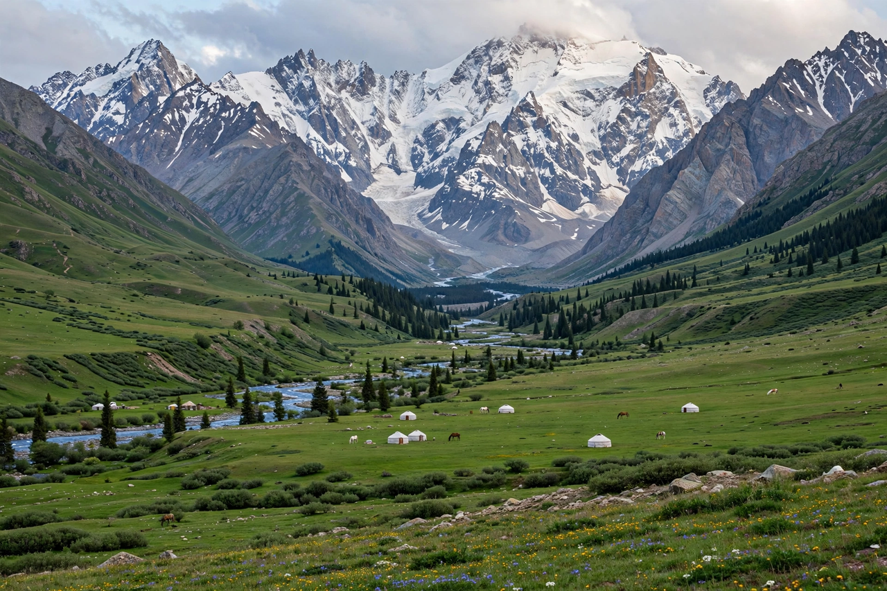

Tian Shan
From Wikipedia, the free encyclopedia

The Tian Shan ('Mountains of Heaven' in Chinese) is a large system of mountain ranges in Central Asia, spanning some 2,900 km from Uzbekistan and Kyrgyzstan through Kazakhstan into China's Xinjiang. Its highest peak is Jengish Chokusu (Victory Peak, 7,439 m), followed by Khan Tengri (7,010 m, counting its ice cap). Glaciers of the Tian Shan feed the rivers of arid Central Asia — the Syr Darya, Ili and Tarim — making the range the region's water tower amid accelerating ice loss.
Geography and nature
The range's parallel ridges enclose high valleys and Lake Issyk-Kul (the world's second-largest alpine lake, which never freezes). Its juniper and spruce forests and alpine meadows host snow leopards, ibex and the wild ancestors of the apple (Malus sieversii forests of Kazakhstan). Parts are UNESCO-listed in both Xinjiang (2013) and the Western Tian-Shan (2016).
Human history
Silk Road passes crossed the Tian Shan between the Tarim Basin oases and the steppe; Xuanzang traversed its glaciers to India in the seventh century. The range now borders five states, its passes (Torugart, Irkeshtam) carrying China–Central Asia trade whose growth re-enacts the old geography with trucks and rails.